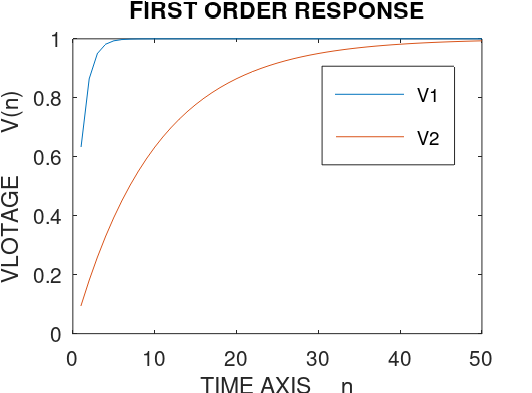

%FIRST ORDER RESPONSE clc, clear, clf; %constants here R1 = 1000000; R2 = 10000000; C = 10^(-6); %array indexing starts from 1 and not 0 for n= 1:1:50 V1(n) = 1 - exp(-n/(R1*C)); V2(n) = 1 - exp(-n/(R2*C)); endfor %V1, V2 % this will pring all numerical values of matrix V1 and V2 plot(V1) hold on %without holding, the second plot erases first plot plot(V2) %labeling xlabel('TIME AXIS n'); ylabel('VLOTAGE V(n)'); title('FIRST ORDER RESPONSE'); legend('V1','V2')